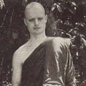

| Home Page |
|
 |
Venerable Jayasaro (Shaun Chiverton) was born on the Isle
of Wight, England, in 1958. At school he excelled academically, but
a spell of three weeks in Morocco with the Venture Scouts when he was
14 had whetted his appetite for travel, and when he left school he decided
to go overland by bus to India. |
|
asked by the senior monks of Wat Pah Pong to prepare Ajahn Chah's biography.
In 1988 the former visited the U.K. as a translator for Venerable Chao
Khun Pannananda also to spend time with his family. The following reflections
on Ajahn Chah's life are taken from a talk given at Amaravati Buddhist
Centre in June of that year. MY OWN FIRST MEETING WITH AJAHN CHAH was on the full moon of December 1978. I had spent the 'Rains' retreat of that year as an eight-precept lay person with Ajahn Sumedho at Oakenholt here in England. After the retreat I went out to Thailand. When I arrived at Wat Pah Pong, Venerable Pamutto, an Australian monk resident there at the time, took me to see Ajahn Chah. He was sitting under his kuti having a drink. He looked at me and smiled very warmly. He held out the drink he had in his hand so I crawled over and took it. As I returned to my place I found there were tears welling up in my eyes. I was emotionally overcome for quite a while. Since that day I don't think I have ever wanted to leave the monastery or do anything except be a disciple of Ajahn Chah. People often presumed there would be a problem with language for Westerners who wanted to stay at the monastery, but this was not the case. Someone once asked Ajahn Chah: 'Luang Por, how do you teach all your Western disciples? Do you speak English or French? Do you speak Japanese or German?' 'No,' replied Ajahn Chah. Language was not so important to Luang Por. He knew how to see through the exterior trappings of language and culture. He could see how basically all minds revolve around the same old centres of greed, hatred and delusion. His method of training was one of pointing directly at the way our minds work. He was always showing us how craving gives rise to suffering actually allowing us to see directly the Four Noble Truths. And for him, the way of exposing desires was to frustrate them. In his vocabulary, the words 'to teach' and 'to torment' were more or less interchangeable. Such training as this can only take place if everyone in the monastery has great confidence in the teacher. If there is the slightest suspicion that he might be doing it out of aversion, or desire for power, then there wouldn't be any benefit. In Ajahn Chah's case everyone could see that he had the greatest courage and fortitude and so could trust that he was doing it out of compassion. Primarily he would teach about letting go. But he also taught a lot about what to do when we can't let go. 'W e endure,' he would say. Usually people could appreciate intellectually all about letting go, but when faced with obstacles they couldn't do it. The teaching of patient endurance was a central aspect of the way that he taught. He continually changed routines around in the monastery so you wouldn't become stuck in ruts. As a result you kept finding yourself not quite knowing where you stood. And he would always be there watching so you couldn't be too heedless. This is one of the great values of living with a teacher; one feels the need to be mindful. In looking into Ajahn Chah's early life it was inspiring for me to find just how many problems he had. Biographies of some great masters leave you with the impression that the monks were perfectly pure from the age of eight or nine that they didn't have to work at their practice. But for Ajahn Chah practice was very difficult; for one thing he had a lot of sensual desire. He also had a great deal of desire for beautiful requisites bowl and robes, etc. He made a resolution in working with these tendencies that he would never ask for anything even if it was permitted to do so by the Discipline. He related once how his robes had been falling to bits; his under-robe was worn paper-thin so he had to walk very carefully, lest it split. Then one day he heedlessly squatted down and it tore completely. He didn't have any cloth to patch it but remembered the foot-wiping cloths in the Meeting Hall. So he took them away, washed them and patched his robe with them. In later times when he had disciples, he excelled in skilful means for helping them; he had had so many problems himself. In another story, he related how he made a resolution to really work with sensual desire. He resolved that for the three-month 'Rains' retreat he would not look at a woman. Being very strong-willed, he was able to keep to it. On the last day of the retreat many people came to the monastery to make offerings. He thought: 'I've done it now for three months, let's see what happens.' He looked up and at that moment there was a young woman right in front of him. He said the impact was like being hit by lightning. It was then that he realised mere sense restraint, although essential, was not enough. No matter how restrained one may be regarding the eyes, ears, nose, tongue, body, and mind, if there wasn't wisdom to understand the actual nature of desire, then freedom from it was impossible. He was always stressing the importance of wisdom: not just restraint, but mindfulness and contemplation. Throwing oneself into practice with great gusto and little reflective ability may result in a strong concentration practice but eventually end up in despair. Monks practising like this usually come to a point where they decide that they don't have what it takes to 'break through' in this lifetime, and disrobe. He emphasised that continuous effort was much more important than making a great effort for a short while only to let it all slide. Day in, day out; month in, month out; year, in year out: that is the real skill of the practice. What is needed in mindfulness practice, he taught, is a constant awareness of what one is thinking, doing or saying. It is not a matter of being on retreat or off retreat, or of being in a monastery or out wandering on tudong ; it's a matter of constancy.' What am I doing now; why am I doing it?' constantly looking to see what is happening in the present moment. 'Is this mind-state coarse or refined?' In the beginning of practice, he said, our mindfulness is intermittent like water dripping from a tap. But as we continue, the intervals between the drips lessen and eventually they become a stream. This stream of mindfulness is what we are aiming for. It was noticeable that he did not talk a lot about levels of enlightenment or various states of concentration absorption (jhana). He was aware of how people tend to attach to these terms and conceive of practice as going from this stage to that. Once someone asked him if such and such a person was an arahant was enlightened. He answered: 'If they are then they are, if they're not then they're not; you are what you are, and you're not like them. So just do your own practice.' He was very short with such questions. When people asked him about his own attainments, he never spoke praising himself or making any claim whatsoever. When talking about the foolishness of people, he wouldn't say:' You think like this and you think like that,' or' You do this and you do that.' Rather, he would always say:' W e do this and we do that.' The skill of speaking in such a personal manner meant those listening regularly came away feeling that he was talking directly to them. Also, it often happened that people would come with personal problems they wanted to discuss with him, and that very same evening he would give a talk covering exactly that subject. In setting up his monasteries, he took a lot of his ideas from the great meditation teacher Venerable Ajahn Mun, but also from other places he encountered during his years of wandering. Always he laid great emphasis on a sense of community. In one section of the Mahaparinibbana Sutta ('Dialogues of the Buddha,' sutta 16) the Buddha speaks about the welfare of the Sangha being dependent on meeting frequently in large numbers, in harmony, and on discussing things together. Ajahn Chah stressed this a lot. The Bhikkhu-Discipline Vinaya was to Ajahn Chah a very important tool for training. He had found it so in his own practice. Often he would give talks on it until one or two o'clock in the morning; the bell would then ring at three for morning chanting. Monks were sometimes afraid to go back to their kutis lest they couldn't wake up, so they would just lean against a tree. Especially in the early days of his teaching things were very difficult. Even basic requisites like lanterns and torches were rare. In those days the forest was dark and thick with many wild and dangerous animals. Late at night you could hear the monks going back to their huts making a loud noise, stomping and chanting at the same time. On one occasion, twenty torches were given to the monastery. But as soon as the batteries ran out, they all came back into the stores as there weren't new batteries to replace them. Sometimes Ajahn Chah was very harsh on those who lived with him. He admitted himself that he had an advantage over his disciples. He said that when his mind entered samadhi (concentration) for only thirty minutes it could be the same as having slept all night. Sometimes he talked for literally hours. Going over and over the same things again and again, telling the same story hundreds of times. For him, each time was as if the first. He would be sitting there giggling and chuckling away and everybody else would be looking at the clock and wondering when he would let them go back. It seemed that he had a special soft spot for those who suffered a lot; this often meant the Western monks. There was one English monk, Venerable Thitappo, whom he gave a lot of attention to; that means he tormented him terribly. One day there was a large gathering of visitors to the monastery and, as often happened, Ajahn Chah was praising the Western monks to the Thais as a way of teaching them. He was saying how clever the Westerners were, all the things they could do and what good disciples they were. 'All,' he said 'except this one,' pointing to Venerable Thitappo. 'He's really stupid.' Another day he asked Venerable Thitappo: 'Do you get angry when I treat you like this?' Venerable Thitappo replied: 'What use would it be? It would be like getting angry at a mountain.' Several times people suggested to Ajahn Chah that he was like a Zen Master. 'No I'm not,' he would say, 'I'm like Ajahn Chah.' There was a Korean monk visiting once who liked to ask him koans. Ajahn Chah was completely baffled; he thought they were jokes. You could see how it was necessary to know the rules of the game before you could give the right answers. One day this monk told Ajahn Chah the Zen story about the flag and the wind and asked: 'Is it the flag that blows or is it the wind?' Ajahn Chah answered: 'It's neither; it's the mind'. The Korean monk thought that was wonderful and immediately bowed to Ajahn Chah. But then Ajahn Chah said he'd just read the story in the Thai translation of Hui Neng. Many of us tend to confuse profundity with complexity, so Ajahn Chah liked to show how profundity was in fact simplicity. The truth of impermanence is the most simple thing in the world, and yet it is the most profound. He really emphasised that. He said the key to living in the world with wisdom is a regular recollection of the changing nature of things. 'Nothing is sure,' he would constantly remind us. He was always using this word in Thai 'Mai-naa!' meaning 'uncertain'. This teaching: 'It's not certain,' he said, sums up all the wisdom of Buddhism. In meditation, he emphasised, 'We can't go beyond the hindrances unless we really understand them.' This means knowing their impermanence. Often he talked about 'killing the defilements', and this also meant 'seeing their impermanence'. 'Killing defilements' is an idiomatic expression in the meditative Forest Tradition of North East Thailand. It means that by seeing with penetrative clarity the actual nature of defilements, you go beyond them. Whilst it was considered the 'job' of a bhikkhu in this tradition to be dedicated to formal practice, it didn't mean there wasn't work to do. When work needed doing you did it. And you didn't make a fuss. Work is not any different from formal practice if one knows the principles properly. The same principles apply in both cases, as it's the same body and mind. And in Ajahn Chah's monasteries, when the monks worked, they really worked. One time he wanted a road built up to W at Tum Saeng Pet mountain monastery, and the Highways Department offered to help. But before long they pulled out. So Ajahn Chah took the monks up there to do it. Everybody worked from three o'clock in the afternoon until three o'clock the next morning. A rest was allowed until just after five when they would head off down the hill to the village on alm sround. After the meal they could rest again until three, before starting work once more. But nobody saw Ajahn Chah take a rest; he was busy receiving people who came to visit. And when it was time to work, he didn't just direct it. He joined in the heavy lifting and carrying of rocks alongside everyone else. That was always very inspiring for the monks to see: hauling water from the well, sweeping and so on, he was always there right up until the time his health began to fail. Ajahn Chah wasn't always popular in his province in North East Thailand, even though he did bring about many major changes in the lives of the people. There was a great deal of animism and superstition in their belief systems. Very few people practised meditation, out of fear that it would drive them crazy. There was more interest in magical powers and psychic phenomena than in Buddhism. A lot of killing of animals was done in the pursuit of merit. Ajahn Chah was often very outspoken on such issues, so at first he had many enemies. Nevertheless, there were always many who loved him. And it was clear that he never played on that. In fact, if any of his disciples were getting too close, he would send them away. Sometimes monks became attached to him, and he promptly sent them off to some other monastery. As charismatic as he was, he always stressed the importance of Sangha, of community spirit. One New Year's Eve I remember how, in accordance with custom, a vast number of people had come to the monastery. After the evening chanting Ajahn Chah gave a talk, and this was followed by meditation. Just before midnight someone came in and announced that a senior monk from the village monastery had arrived. I remember how Ajahn Chah went out and received the monk himself: came in carrying his bag and proceeded to lay out his sitting-cloth. He then made the three most beautiful bows of respect that I have ever seen. In every way he displayed heartfelt humility: as if he were a monk just newly ordained. In the middle of many hundreds of his disciples it was as though he were completely immune to all the unskilful feelings that many of us may have felt. I think it was because Ajahn Chah was 'nobody in particular' that he could be anybody he chose. If he felt it was necessary to be fierce, he could be that. If he felt that somebody would benefit from warmth and kindness, then he would give that. You had the feeling he would be whatever was helpful for the person he was with. And he was very clear about the proper understanding of conventions. Someone once asked him about the relative merits of arahants and bodhisattvas. He answered: 'Don't be an arahant, don't be a bodhisattva, don't be anything at all. If you are an arahant you will suffer, if you are bodhisattva you will suffer, if you are anything at all you will suffer.' I had the feeling that Ajahn Chah wasn't anything at all. The quality in him that one was inspired by was the light of Dhamma he reflected; it wasn't exactly him as a person. So since first meeting Ajahn Chah, I have had an unshakeable conviction that this way is truly possible it works it is good enough. And I've found a willingness to acknowledge that, if there are any problems, it's me who is creating them. It's not the form and it's not the teachings. This appreciation has made things a lot easier. It's important that we are able to learn from all the ups and downs we have in practice. It's important that we come to know how to be 'a refuge unto ourselves' to see clearly for ourselves. When I consider the morass of selfishness and foolishness my life could have been.... And then reflecting on the teachings and benefits I've received, I find I really want to dedicate my life to being a credit to my teacher. Such reflection has been a great source of strength. This is one form of sanghanusati 'Recollection on Sangha' recollection of the great debt we owe our teachers. So I trust that you may find this is of some help in your practice. |
| Home Page |